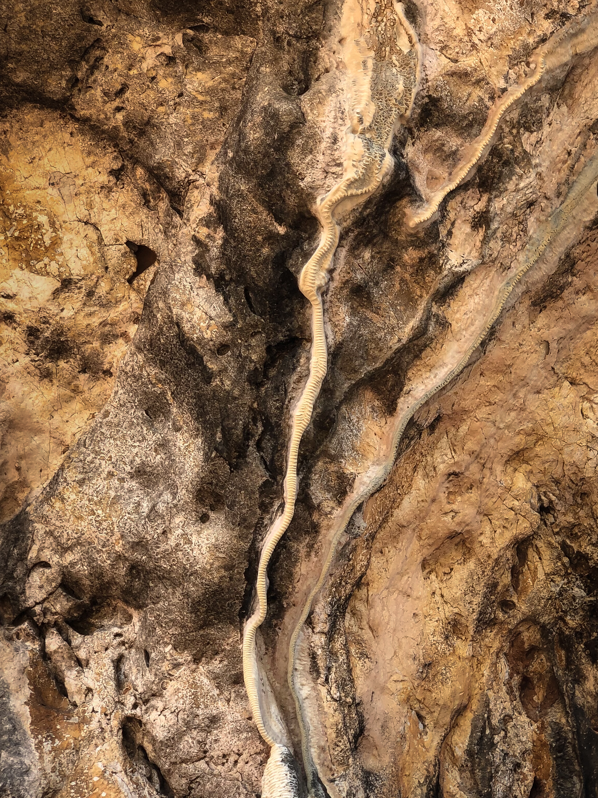

Столица и Горы
Дили и Обитель Нагов
Начинаем с Дили — портала португальской архитектуры, цветного стрит-арта и атмосферных рынков Тейс.
Остров держат Наги. В горах скрыто главное сакральное место для глубокой медитации.
🧘 Энергетическая работа:
Контакт с мудрыми хранителями Земли (Нагами). Медитативная практика «Запрос Сердца» — прямое обращение к тонким сущностям острова для развязывания внутренних узлов, получения ответов на ключевые жизненные вопросы и проявления скрытого намерения.
Природная купель
Естественный бассейн и Дух Воды
Уникальное природное место, естественным образом образованное в слоистых известняковых скалах. Наверху обитает Дух Воды.
Местные дети прыгают с крутых обрывов в прохладную бирюзовую чашу — место искренней первобытной радости.
🧘 Энергетическая работа:
Практика «Водное Омовение и Сброс Тяжести». Взаимодействие с Духом Воды через физическое погружение в артезианскую купель. Смывание ментального шума, накопленного бизнес-стресса и чужих ожиданий. Возвращение к состоянию чистой детской искренности и лёгкости.
Артефакты 40 000 лет
Волшебные Камни и Петроглифы
Вдоль побережья торчат из воды волшебные камни, где обитают духи — добраться к ним можно только по воде.
В пещерах Lene Hara сохранилась наскальная живопись (петроглифы солярных знаков, морских ежей и ладоней), созданная древнейшими людьми более 30,000–40,000 лет назад.
🧘 Энергетическая работа:
Снастройка с Памятью Предков и Хранителями Прибоя. Подход по воде к рифовым камням-духам и работа в гротах с 40-тысячелетней наскальной живописью. Актуализация древнейших пластов сознания, заякорение личной силы через соприкосновение с первыми знаками человечества.


Восток Острова
Остров Жако и Китовые Потоки
На самом востоке расположен священный девственный остров Жако (Lulik), где дикие олени подходят на расстояние вытянутой руки, а вокруг — только бескрайний океан.
Базируемся в крепости-отеле Pousada Tutuala. В проливах южнее — плавание в открытом океане с синими китами.
🧘 Энергетическая работа:
Практика «Тотального Океанического Денокса и Затвора». Соблюдение правил сакрального табу (Lulik) на Жако: тишина, медитация в абсолютном одиночестве на коралловом рифе. Соприкосновение с гигантской вибрацией Синих Китов — расширение объема сознания до размеров Океана.